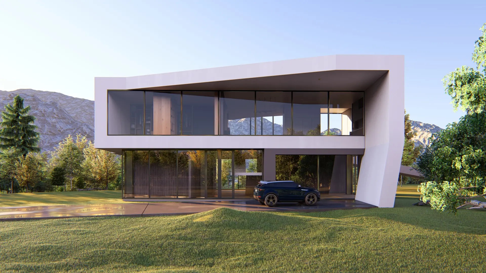
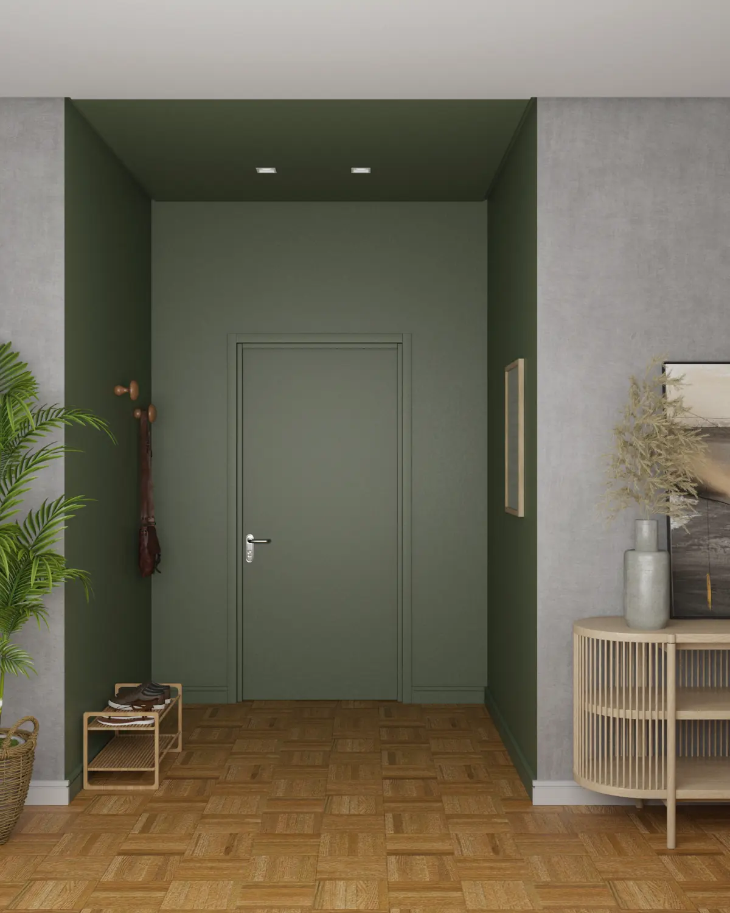
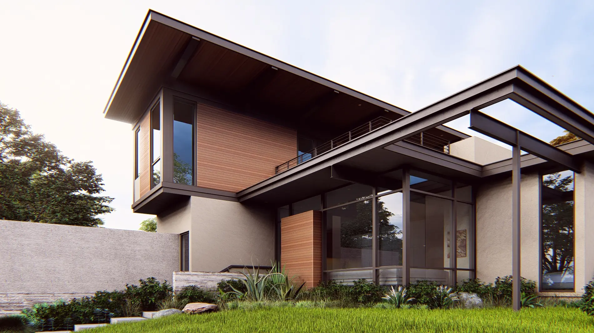
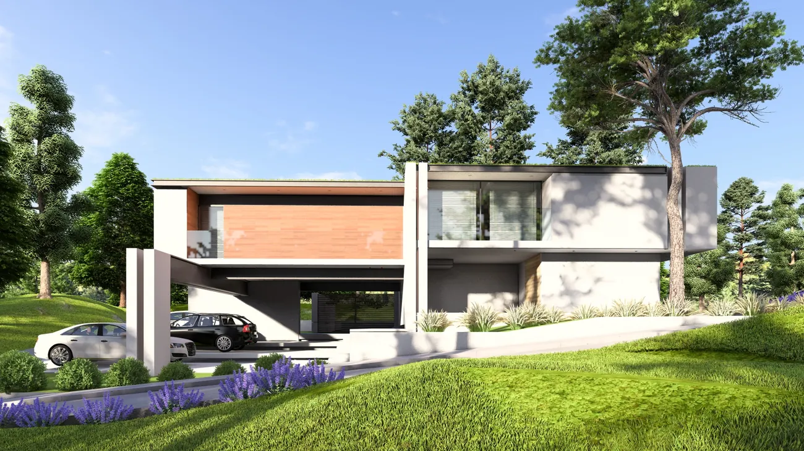

Projeto Arquitetônico
Já sabe como quer sua casa? Desenvolvemos o projeto completo, alinhado ao seu terreno e ao seu orçamento, pronto para aprovação e execução.

Fale com a Andraco e descubra como aprovar seu financiamento antes de começar a obra.
Já sabe como quer sua casa? Desenvolvemos o projeto completo, alinhado ao seu terreno e ao seu orçamento, pronto para aprovação e execução.
Precisa de crédito para construir? Nosso correspondente bancário parceiro cuida de toda a aprovação, incluindo ajuda na escolha do terreno ideal.
Já tem o projeto pronto? Assumimos a execução com o mesmo padrão de controle dos projetos completos, com orçamento fechado a partir de um único ambiente.
Quer resolver tudo de uma vez? Do projeto ao financiamento e à execução, cuidamos de cada etapa em um só pacote, sem você precisar coordenar fornecedores.
Encontrou o serviço que você precisa? Vamos falar sobre o seu projeto.
Fale Conosco
Do projeto à entrega das chaves, cuidamos de cada etapa com atendimento próximo.
Projetos de interiores
Correspondente bancário parceiro aprova seu financiamento antes da obra começar
Gestão completa da obra, do orçamento até a entrega das chaves
Atendimento personalizado em cada etapa do seu projeto residencial
Mais de 12 anos de experiência em construção residencial em Curitiba
| O que é comum no mercado | Como a Andraco trabalha |
|---|---|
| Financiamento resolvido só depois que a obra já começou | Financiamento aprovado antes mesmo do início da obra |
| Orçamento que muda no meio do caminho | Orçamento fechado e detalhado desde o início |
| Você precisa cobrar atualização de cada fornecedor | Gestão única do início ao fim, sem você precisar coordenar |
| Comunicação reativa, só quando você pergunta | Atendimento próximo em cada etapa do seu projeto |
Quer construir sem essas dores de cabeça? Comece pelo seu financiamento.
Fale ConoscoAs imagens são renderizações dos projetos desenvolvidos pela nossa equipe — representações do projeto aprovado, não fotografias de obra concluída.
Gostou do que viu? Vamos desenhar o projeto da sua casa.
Fale Conosco
Financiamento aprovado antes mesmo do início da obra.
Projeto Vértice

A Andraco Engenharia atua há mais de 12 anos ajudando famílias em Curitiba e região metropolitana a construir a casa própria sem burocracia.
Nossa parceria direta com um correspondente bancário resolve o financiamento antes mesmo da obra começar.
Do projeto à entrega das chaves, cuidamos de cada etapa com atendimento próximo e personalizado.
Nosso correspondente bancário parceiro analisa seu perfil e cuida de toda a burocracia do crédito, incluindo apoio na escolha do terreno. Você só assina depois que tudo já está resolvido.
Trabalhamos com orçamento fechado e detalhado desde o início. No primeiro contato, levantamos todas as informações para apresentar um valor claro antes de você decidir.
Depende do seu projeto e da etapa em que você está hoje. Assim que falamos com você, já organizamos um cronograma com prazos definidos para cada etapa.
Sim. Se você já tem projeto e terreno, assumimos a execução com o mesmo padrão de controle dos pacotes completos. Se ainda não tem nada disso, também cuidamos de tudo desde o início.
Poucas construtoras têm parceria direta com correspondente bancário para resolver seu financiamento antes da obra. Somamos isso a mais de 12 anos de gestão completa e atendimento próximo.
É só falar com a gente pelo botão desta página. Em pouco tempo, alguém da nossa equipe entra em contato para entender seu projeto e já apresentar os próximos passos.
Ainda com dúvidas? Fale direto com nossa equipe.
Fale ConoscoFale com a Andraco agora e descubra como aprovar seu crédito antes mesmo de colocar o primeiro tijolo.
Fale ConoscoUma mensagem no WhatsApp e você já conversa com quem vai conduzir o seu projeto.
Tipo de projeto, faixa de investimento e prazo — tudo na conversa, sem formulário.
O correspondente bancário parceiro assume a aprovação do crédito antes da obra.